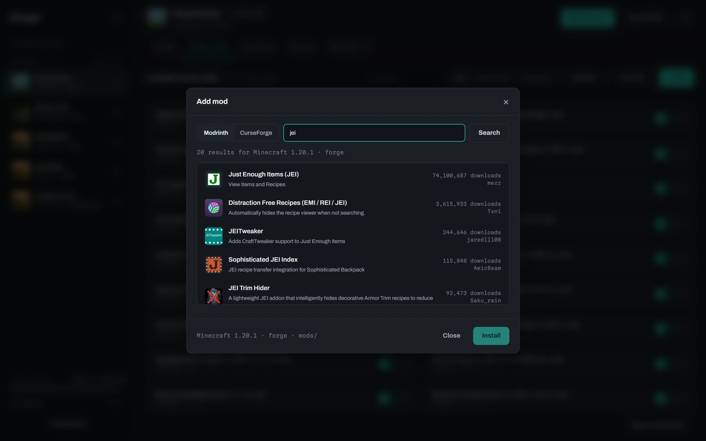
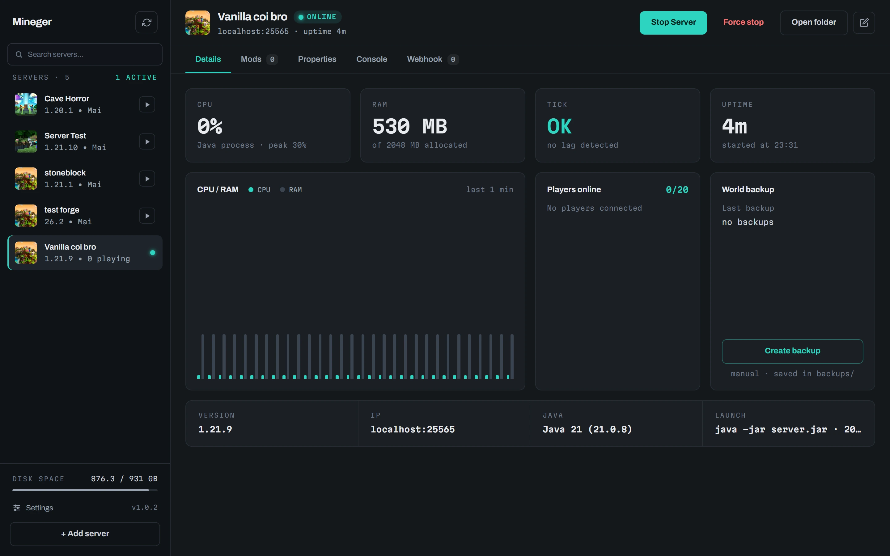

Vanilla
The official Mojang server, downloaded and verified against its SHA1.
Open-source Minecraft server manager for Windows
Create vanilla, Paper or modded servers in a couple of clicks. Install modpacks from a link, mods from Modrinth and CurseForge, and let friends or bots manage the server with you.
Version 1.0.2 · free · No account. No cloud. Your servers stay as folders on your disk.
Three kinds of servers
Versions and loader builds come straight from the official sources, with the recommended build preselected.
The official Mojang server, downloaded and verified against its SHA1.
The optimised server that runs Bukkit and Spigot plugins.
NeoForge, Forge or Fabric, installed with the official installers. Java 8, 17 or 21 is picked for you.
Modpacks from a link
CurseForge, Modrinth and FTB. When a modpack ships no server pack, Mineger builds one from the client pack and leaves client-only mods out.
Mineger checks for new modpack versions, backs up the world first and migrates your data, so nothing is lost.

Mods and plugins
Browse Modrinth and CurseForge filtered by your server's Minecraft version and loader. Every file shows where it came from, and updates with a button.
Day to day
Logs with highlighting, commands, and the last lines kept across restarts.
Live metrics of the Java process, memory set with a slider.
An editor with descriptions, not a text file.
One click, zipped, kept next to the server.
Open the port on your router from the app.
Any image, resized to the 64×64 PNG the game wants.
Drop a zip of an existing server: version and loader are detected for you.
English (US or UK) and Italian, switched instantly. Adding one is a single JSON file.
Play with friends
Turn on host mode and share an invite link: other copies of Mineger control your servers remotely, over LAN or VPN. Per-server webhooks let Discord bots, Twitch extensions or plain scripts start, stop and talk to the server, each with its own token and permissions.
$ curl "http://host:25580/hook/ID?token=…&action=say&message=hi" { "ok": true, "action": "say" }
Screenshots

One installer, no account, servers in a couple of minutes.
Free and open source under the MIT license.